Funciones personalizadas:
# Tema personalizado
blank_theme <- function(aspect.ratio = 1/1.61){
theme(panel.grid.minor = element_blank(),
panel.grid.major = element_blank(),
panel.background = element_blank(),
axis.line = element_blank(),
aspect.ratio = aspect.ratio,
axis.ticks = element_blank(),
text = element_text(colour = "gray50"), # Eliminar
legend.position = "none"
)
}
# Función para la estimación de los CP óptimos:
evplot <- function(ev){
# Broken stick model (MacArthur 1957)
n <- length(ev)
bsm <- data.frame(j=seq(1:n), p=0)
bsm$p[1] <- 1/n
for (i in 2:n) bsm$p[i] <- bsm$p[i-1] + (1/(n + 1 - i))
bsm$p <- 100*bsm$p/n
# Plot eigenvalues and % of variation for each axis
op <- par(mfrow=c(2,1))
barplot(ev, main="Eigenvalues", col="bisque", las=2)
abline(h=mean(ev), col="red")
legend("topright", "Average eigenvalue", lwd=1, col=2, bty="n")
barplot(t(cbind(100*ev/sum(ev), bsm$p[n:1])), beside=TRUE,
main="% variation", col=c("bisque",2), las=2)
legend("topright", c("% eigenvalue", "Broken stick model"),
pch=15, col=c("bisque",2), bty="n")
par(op)
}
Agrupamiento jerárquico (clúster)
Realizar un agrupamiento jerárquico en R es bastante sencillo, únicamente debemos de tener nuestro data.frame cuyos nombres de renglones sean las etiquetas de nuestras instancias a agrupar, calcular las distancias con la función dist(x, method) y unir los grupos con la función hclust(dist, method).
Si graficamos este objeto tendremos un dendrograma muy sencillo:
library(ggplot2, quietly = T)
library(ggdendro, quietly = T)
ggdendrogram(hc.av, labels = T)
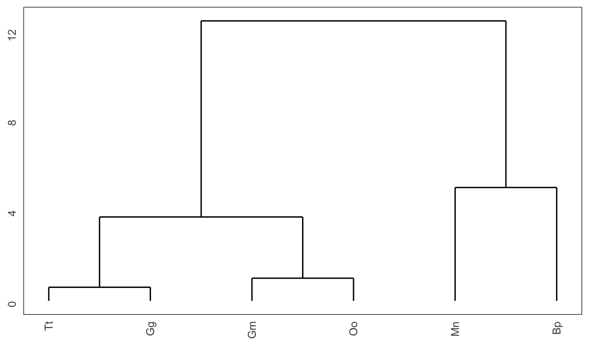
Podemos personalizar el dendrograma utilizando la función set(object, what, value) de la librería dendextend:
library(dendextend)
# Primero transformemos nuestro objeto a un dendrograma:
dend <- as.dendrogram(hc.av)
# Cambiemos el color a las ramas:
dend <- set(dend, "branches_k_color",
value = "deepskyblue4",
k = 1)
#dend <- set(dend, "branches_k_color",
# value = c(rgb(0,118, 186, maxColorValue = 255),
# rgb(0, 123, 118, maxColorValue = 255),
# rgb(255, 147, 0, maxColorValue = 255),
# rgb(181, 23, 0, maxColorValue = 255)),
# k = 4)
dend <- set(dend, "branches_lwd", 1)
# Cambiemos el color de las etiquetas:
dend <- set(dend, "labels_col",
value = c(rgb(0,118, 186, maxColorValue = 255),
rgb(0, 123, 118, maxColorValue = 255),
rgb(255, 147, 0, maxColorValue = 255),
rgb(181, 23, 0, maxColorValue = 255)),
k = 4)
# Graficador base de R:
plot(dend)
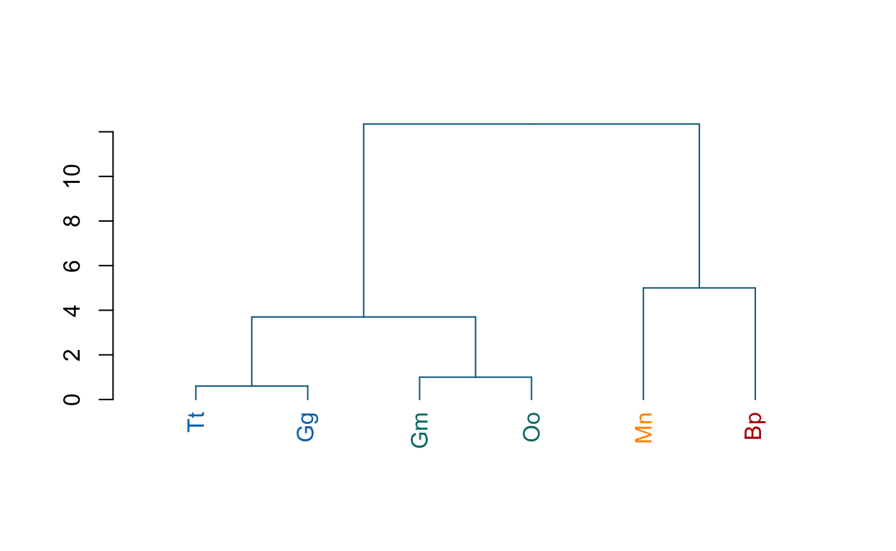
Por homogeneidad con el resto del curso, grafiquémoslo utilizando ggplot2:
ggd1 <- as.ggdend(dend)
ggd1.plot <- ggplot(ggd1, offset_labels = -1, theme = blank_theme()) +
ylim(-2.4, max(get_branches_heights(dend))) +
scale_x_continuous(breaks = NULL) +
labs(title = "Dendrograma de especies de cetáceos",
subtitle = "Agrupamientos por longitud (método: promedio)",
x = element_blank(),
y = "Distancia euclidiana",
caption = "Datos de bit.ly/clust_medium")
ggd1.plot
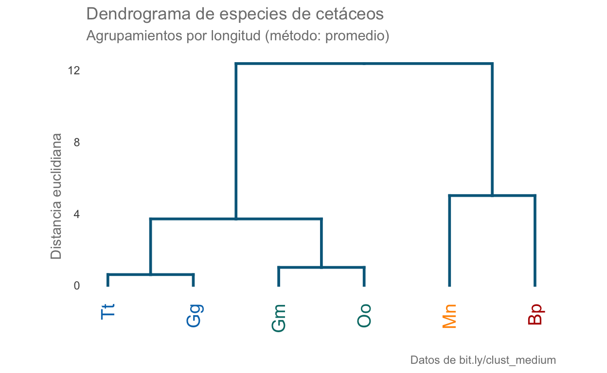
Ejercicio Mv
Habiendo comprendido cómo funciona el análisis de agrupamientos, apliquémoslo a una base de datos multivariada (cluster.txt), la cual consiste en mediciones de variables ambientales en distintos sitios de muestreo y el objetivo es agrupar aquellos que tengan características similares. En el resumen podemos ver que hay diferencias muy importantes en las escalas de las variables, por lo cual será necesario escalar los datos.
clust.df <- read.table("data/cluster.txt",
header = T, row.names = 1) # ¡OJO con row.names!
summary(clust.df)
Temp NH4 NO3 OD Prof
Min. :16.90 Min. :0.540 Min. :0.400 Min. :0.810 Min. : 27
1st Qu.:18.20 1st Qu.:0.900 1st Qu.:1.830 1st Qu.:2.650 1st Qu.: 76
Median :19.60 Median :0.980 Median :2.500 Median :3.800 Median :122
Mean :20.31 Mean :1.047 Mean :2.394 Mean :4.103 Mean :109
3rd Qu.:21.40 3rd Qu.:1.250 3rd Qu.:3.120 3rd Qu.:5.840 3rd Qu.:148
Max. :25.80 Max. :1.570 Max. :4.210 Max. :8.010 Max. :199
Trans Caud SST STD
Min. : 4.00 Min. : 0.520 Min. : 4.0 Min. : 86.9
1st Qu.: 6.00 1st Qu.: 1.960 1st Qu.: 50.0 1st Qu.:101.5
Median :10.00 Median : 5.580 Median : 134.0 Median :104.3
Mean :17.62 Mean : 5.877 Mean : 254.3 Mean :108.7
3rd Qu.:18.00 3rd Qu.: 8.100 3rd Qu.: 298.7 3rd Qu.:113.7
Max. :56.00 Max. :15.440 Max. :1163.3 Max. :137.7
PO4 DBO5 DQO
Min. :0.000 Min. :20.21 Min. : 5.00
1st Qu.:0.250 1st Qu.:21.29 1st Qu.:16.00
Median :0.400 Median :23.27 Median :32.00
Mean :0.391 Mean :27.45 Mean :32.52
3rd Qu.:0.600 3rd Qu.:32.62 3rd Qu.:50.00
Max. :0.870 Max. :59.82 Max. :62.00 Otro problema, tal vez no tan evidente, es que la distribución de SST se encuentra sumamente sesgada, por lo que habrá que a) aplicar una transformación para normalizar los datos, b) retirarla del análisis. Tomando en cuenta los valores, es bastante probable que las mediciones estén equivocadas, por lo que la retiraremos del análisis.
mask <- colnames(clust.df)[colnames(clust.df) != "SST"]
clust.filt <- clust.df[,mask]
colnames(clust.filt)
[1] "Temp" "NH4" "NO3" "OD" "Prof" "Trans" "Caud" "STD" "PO4"
[10] "DBO5" "DQO" Ahora escalemos todos nuestros datos. Al analizar rápidamente la distribución de cada una de las variables podemos ver que hay algunas con sesgos que pudieran ser importantes; sin embargo, podemos utilizar una medida de distancia que contienda con este tipo de distribuciones para evitar una transformación más agresiva que el escalamiento.
clust.scale <- scale(clust.filt)
#clust.scale <- log(clust.filt +1) # "normalizar" los datos
summary(clust.scale)
Temp NH4 NO3 OD
Min. :-1.315 Min. :-1.8357 Min. :-1.9515 Min. :-1.4896
1st Qu.:-0.814 1st Qu.:-0.5326 1st Qu.:-0.5518 1st Qu.:-0.6573
Median :-0.275 Median :-0.2430 Median : 0.1039 Median :-0.1370
Mean : 0.000 Mean : 0.0000 Mean : 0.0000 Mean : 0.0000
3rd Qu.: 0.418 3rd Qu.: 0.7343 3rd Qu.: 0.7108 3rd Qu.: 0.7859
Max. : 2.112 Max. : 1.8926 Max. : 1.7776 Max. : 1.7675
Prof Trans Caud STD
Min. :-1.5885 Min. :-0.8294 Min. :-1.19044 Min. :-1.4307
1st Qu.:-0.6393 1st Qu.:-0.7076 1st Qu.:-0.87045 1st Qu.:-0.4734
Median : 0.2518 Median :-0.4640 Median :-0.06603 Median :-0.2898
Mean : 0.0000 Mean : 0.0000 Mean : 0.00000 Mean : 0.0000
3rd Qu.: 0.7555 3rd Qu.: 0.0232 3rd Qu.: 0.49395 3rd Qu.: 0.3266
Max. : 1.7435 Max. : 2.3373 Max. : 2.12502 Max. : 1.9003
PO4 DBO5 DQO
Min. :-1.45097 Min. :-0.7880 Min. :-1.43661
1st Qu.:-0.52313 1st Qu.:-0.6704 1st Qu.:-0.86246
Median : 0.03358 Median :-0.4548 Median :-0.02734
Mean : 0.00000 Mean : 0.0000 Mean : 0.00000
3rd Qu.: 0.77585 3rd Qu.: 0.5631 3rd Qu.: 0.91217
Max. : 1.77792 Max. : 3.5244 Max. : 1.53851 Ahora realicemos los agrupamientos. Utilizaremos la distancia Mahalanobis ya que esta no es tan sensible a los valores extremos. El método de agrupamiento será ward.D2, (distancias cuadráticas) para minimizar la varianza intra-grupos:
dist.mv1 <- vegdist(clust.scale, method = "mahalanobis")
hc.mv1 <- hclust(dist.mv1, method ="ward.D2")
# Transformemos nuestro objeto a un dendrograma:
dend.mv1 <- as.dendrogram(hc.mv1)
# Cambiemos el color a las ramas:
dend.mv1 <- set(dend.mv1, "branches_k_color",
value = "deepskyblue4",
k = 1)
dend.mv1 <- set(dend.mv1, "branches_lwd", 0.7)
ggd1 <- as.ggdend(dend.mv1)
ggd1.plot <- ggplot(ggd1, offset_labels = -1, theme = blank_theme()) +
expand_limits(y = -2.4) +
scale_x_continuous(breaks = NULL) +
scale_y_continuous(breaks =
seq(0,max(get_branches_heights(dend.mv1)),
2)) +
labs(title = "Dendrograma de sitios de muestreo",
subtitle = "Método de agrupamiento: Ward.D2",
x = element_blank(),
y = "Distancia Mahalanobis",
caption = "Datos: clust.txt")
ggd1.plot
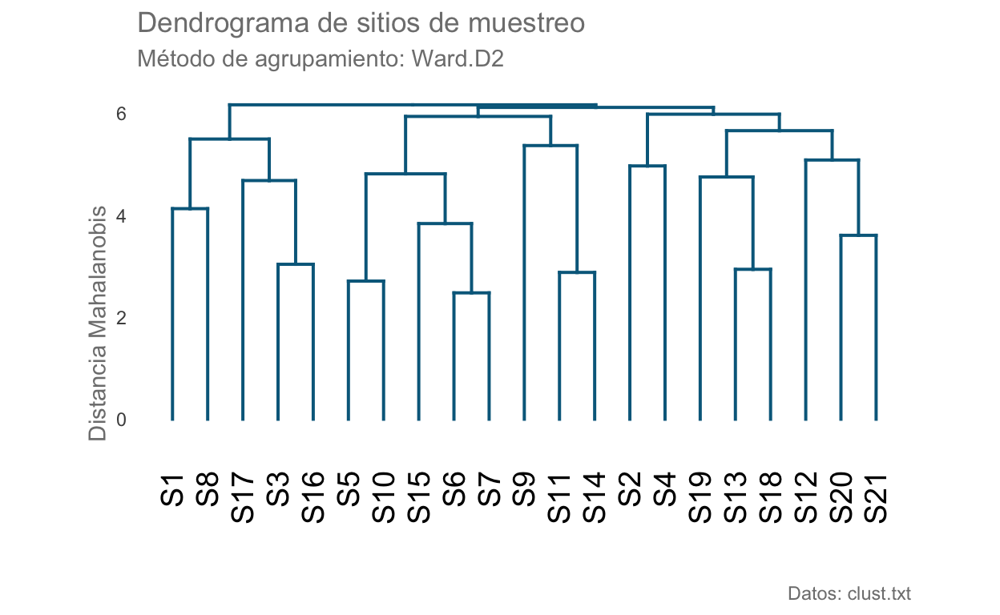
Los agrupamientos con esa combinación de distancia y método de agrupamiento no son claros, veamos qué pasa si consideramos la distancia euclidiana:
dist.mv2 <- vegdist(clust.scale, method = "euclidean")
hc.mv2 <- hclust(dist.mv2, method ="ward.D2")
# Transformemos nuestro objeto a un dendrograma:
dend.mv2 <- as.dendrogram(hc.mv2)
# Cambiemos el color a las ramas:
dend.mv2 <- set(dend.mv2, "branches_k_color",
value = "deepskyblue4",
k = 1)
dend.mv2 <- set(dend.mv2, "branches_lwd", 0.7)
ggd2 <- as.ggdend(dend.mv2)
ggd2.plot <- ggplot(ggd2, offset_labels = -1, theme = blank_theme()) +
expand_limits(y = -2.4) +
scale_x_continuous(breaks = NULL) +
scale_y_continuous(breaks =
seq(0,
max(get_branches_heights(dend.mv2)),
2)) +
labs(title = "Dendrograma de sitios de muestreo",
subtitle = "Método de agrupamiento: Ward.D2",
x = element_blank(),
y = "Distancia Euclidiana",
caption = "Datos: clust.txt")
ggd2.plot
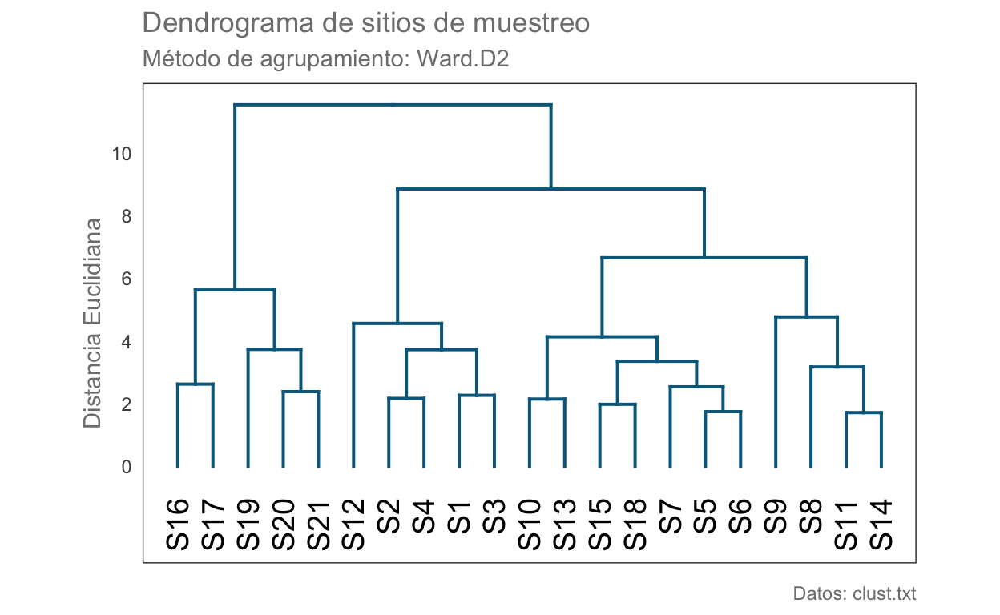
¿Y la distancia Manhattan? Las agrupaciones resultantes son similares; sin embargo, las medidas de distancia son muy diferentes. Utilicemos el caso anterior para evaluar las agrupaciones.
dist.mv3 <- vegdist(clust.scale, method = "manhattan")
hc.mv3 <- hclust(dist.mv3, method ="ward.D2")
# Transformemos nuestro objeto a un dendrograma:
dend.mv3 <- as.dendrogram(hc.mv3)
# Cambiemos el color a las ramas:
dend.mv3 <- set(dend.mv3, "branches_k_color",
value = "deepskyblue4",
k = 1)
dend.mv3 <- set(dend.mv3, "branches_lwd", 0.7)
ggd3 <- as.ggdend(dend.mv3)
ggd3.plot <- ggplot(ggd3, offset_labels = -1, theme = blank_theme()) +
expand_limits(y = -3.5) +
scale_x_continuous(breaks = NULL) +
scale_y_continuous(breaks =
seq(0,max(get_branches_heights(dend.mv3)),
5)) +
labs(title = "Dendrograma de sitios de muestreo",
subtitle = "Método de agrupamiento: Ward.D2)",
x = element_blank(),
y = "Distancia Manhattan",
caption = "Datos: clust.txt")
ggd3.plot
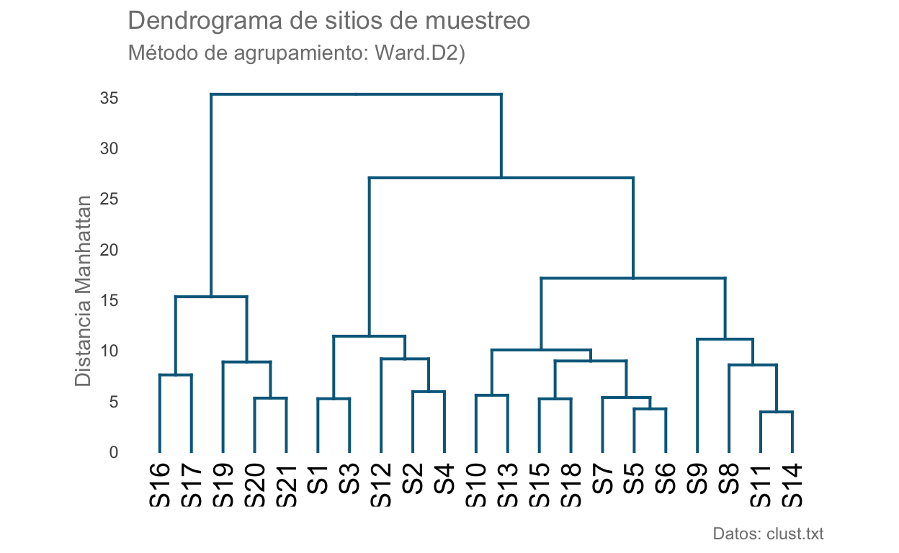
Evaluación de los agrupamientos
Para calcular los índices que estiman el número óptimo de agrupaciones utilizaremos la función NbClust de la librería con el mismo nombre.
library(NbClust)
res <- NbClust(clust.scale, diss = NULL,
distance = "euclidean", method = "ward.D2",
index = "all", max.nc = 8)
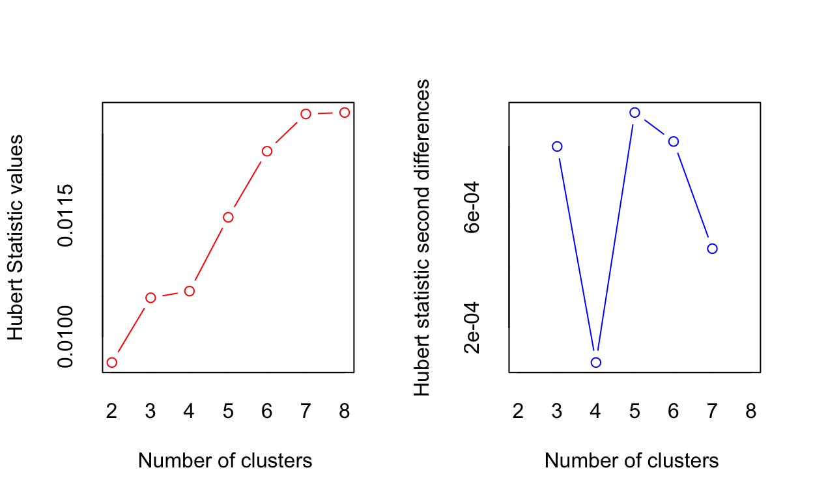
*** : The Hubert index is a graphical method of determining the number of clusters.
In the plot of Hubert index, we seek a significant knee that corresponds to a
significant increase of the value of the measure i.e the significant peak in Hubert
index second differences plot.
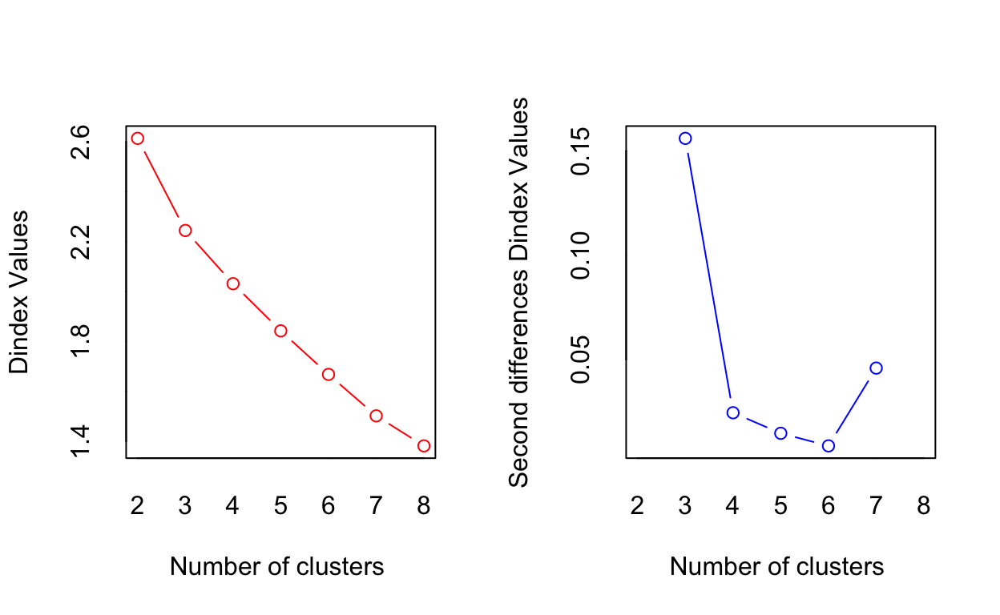
*** : The D index is a graphical method of determining the number of clusters.
In the plot of D index, we seek a significant knee (the significant peak in Dindex
second differences plot) that corresponds to a significant increase of the value of
the measure.
*******************************************************************
* Among all indices:
* 4 proposed 2 as the best number of clusters
* 11 proposed 3 as the best number of clusters
* 1 proposed 5 as the best number of clusters
* 2 proposed 7 as the best number of clusters
* 5 proposed 8 as the best number of clusters
***** Conclusion *****
* According to the majority rule, the best number of clusters is 3
******************************************************************* Veamos ahora los grupos y calculemos el coeficiente de correlación cofenético. Una correlación de prácticamente el 70% es más que aceptable, si consideramos que no filtramos la totalidad de los datos. Como dato curioso, al aplicar una transformación logarítmica se mantienen estos grupos pero el coeficiente de correlación cofenético se eleva a 0.8.
res$Best.partition
S1 S2 S3 S4 S5 S6 S7 S8 S9 S10 S11 S12 S13 S14 S15 S16 S17 S18 S19 S20
1 1 1 1 2 2 2 2 2 2 2 1 2 2 2 3 3 2 3 3
S21
3 hc.e <- cluster::agnes(dist.mv2, diss = T, method = "ward")
# Distancias en el dendrograma
ccc <- cophenetic(hc.e)
# Correlación entre distancias reales y graficadas
ccofen <- cor(dist.mv2, ccc, method = "spearman")
ccofen
[1] 0.6868661Esta forma de ver los agrupamientos no es muy clara, entonces agreguémosla a nuestro gráfico mediante colores de las ramas y etiquetas:
# Cambiamos el color de nuestr
dend.mv2 <- set(dend.mv2, "labels_col",
value = 1:3,
k = 3)
dend.mv2 <- set(dend.mv2, "branches_k_color",
value = 1:3,
k = 3)
dend.mv2 <- set(dend.mv2, "branches_lwd", 0.7)
ggd2 <- as.ggdend(dend.mv2)
ggd2.plot <- ggplot(ggd2, offset_labels = -1, theme = blank_theme()) +
expand_limits(y = -2.4) +
scale_x_continuous(breaks = NULL) +
scale_y_continuous(breaks = seq(0,max(get_branches_heights(dend.mv2)),2)) +
labs(title = "Dendrograma de sitios de muestreo",
subtitle = "Método de agrupamiento: Ward.D2",
x = element_blank(),
y = "Distancia Euclidiana",
caption = "Datos: clust.txt")
ggd2.plot
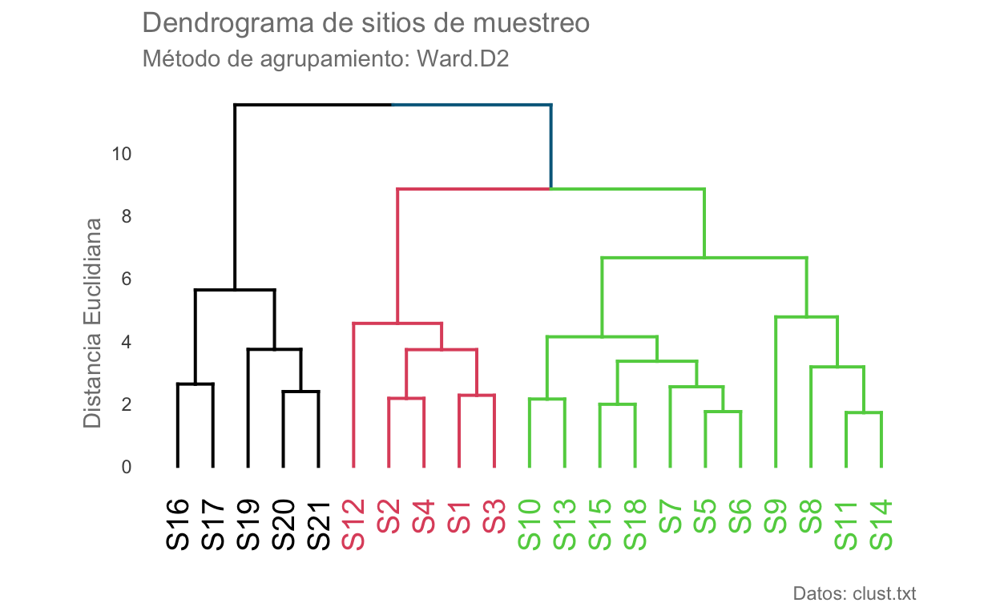
#cairo_pdf("dendrogram.pdf", width = 8, height = 8)
ggd2.plot

#dev.off()
¿Cómo lo interpretamos? Hay que revisar la base de datos para evitar caer en interpretaciones incorrectas y analizar qué características conforman cada grupo.
Análisis de Componentes Principales
Por fin llegó la hora de hablar del Análisis de Componentes Principales. Vimos que esta técnica nos permite aproximar nuestros datos multivariados utilizando nuevas variables llamadas Componentes Principales, las cuales son ortogonales (independientes) entre sí. Apliquemos el Análisis de componentes principales a una base de datos con una gran cantidad de variables:
library(factoextra)
library(FactoMineR)
#Base de datos completa
x1n <- read.table('data/Medidas.txt', header = TRUE)
#Base de datos sin nombres de especies
x1 <- x1n[ ,2:length(x1n) ]
summary(x1)
furcal base radio alto
Min. :0.2527 Min. :0.07088 Min. :0.04408 Min. :0.05319
1st Qu.:0.2716 1st Qu.:0.09108 1st Qu.:0.06748 1st Qu.:0.06709
Median :0.2753 Median :0.09679 Median :0.07090 Median :0.07140
Mean :0.2757 Mean :0.09645 Mean :0.07048 Mean :0.07116
3rd Qu.:0.2801 3rd Qu.:0.10142 3rd Qu.:0.07430 3rd Qu.:0.07534
Max. :0.3202 Max. :0.11394 Max. :0.08311 Max. :0.09723
gordo angos ojo X1erarc
Min. :0.02679 Min. :0.02996 Min. :0.02142 Min. :0.03485
1st Qu.:0.04139 1st Qu.:0.03465 1st Qu.:0.02451 1st Qu.:0.04332
Median :0.04402 Median :0.03577 Median :0.02673 Median :0.05129
Mean :0.04405 Mean :0.03616 Mean :0.02740 Mean :0.05158
3rd Qu.:0.04680 3rd Qu.:0.03745 3rd Qu.:0.02875 3rd Qu.:0.05899
Max. :0.05859 Max. :0.04727 Max. :0.08191 Max. :0.07738
dist. largo cabez hueso
Min. :0.007179 Min. :0.004202 Min. :0.07311 Min. :0.02857
1st Qu.:0.030485 1st Qu.:0.022402 1st Qu.:0.08476 1st Qu.:0.03236
Median :0.035368 Median :0.029488 Median :0.08951 Median :0.03415
Mean :0.031366 Mean :0.026533 Mean :0.08860 Mean :0.03488
3rd Qu.:0.038824 3rd Qu.:0.034574 3rd Qu.:0.09284 3rd Qu.:0.03582
Max. :0.048008 Max. :0.051843 Max. :0.09815 Max. :0.10411
mandib hueso.1 arriba cabeza
Min. :0.03141 Min. :0.02348 Min. :0.01855 Min. :0.07118
1st Qu.:0.03598 1st Qu.:0.03917 1st Qu.:0.02546 1st Qu.:0.08309
Median :0.03980 Median :0.04413 Median :0.02952 Median :0.08796
Mean :0.03923 Mean :0.04498 Mean :0.02946 Mean :0.08890
3rd Qu.:0.04247 3rd Qu.:0.04995 3rd Qu.:0.03391 3rd Qu.:0.09483
Max. :0.04758 Max. :0.08783 Max. :0.03828 Max. :0.10760
boca abiert cachete largo.1
Min. :0.02828 Min. :0.01810 Min. :0.02938 Min. :0.008724
1st Qu.:0.03476 1st Qu.:0.02348 1st Qu.:0.03911 1st Qu.:0.012881
Median :0.03830 Median :0.02531 Median :0.04308 Median :0.014240
Mean :0.03954 Mean :0.02547 Mean :0.04237 Mean :0.014366
3rd Qu.:0.04368 3rd Qu.:0.02741 3rd Qu.:0.04508 3rd Qu.:0.015936
Max. :0.05552 Max. :0.03248 Max. :0.06553 Max. :0.026475
ancho orificio densi hocic
Min. :0.00274 Min. :0.01968 Min. :0.6990 Min. :0.01546
1st Qu.:0.02663 1st Qu.:0.03741 1st Qu.:0.7782 1st Qu.:0.02491
Median :0.03031 Median :0.04381 Median :0.8451 Median :0.02929
Mean :0.03253 Mean :0.04429 Mean :0.8401 Mean :0.02937
3rd Qu.:0.03447 3rd Qu.:0.05085 3rd Qu.:0.9031 3rd Qu.:0.03294
Max. :0.22628 Max. :0.07390 Max. :1.1139 Max. :0.04922
interbr ojoatra proye base.1
Min. :0.007687 Min. :0.02685 Min. :0.007313 Min. :0.01546
1st Qu.:0.014457 1st Qu.:0.03796 1st Qu.:0.013341 1st Qu.:0.02052
Median :0.015776 Median :0.04050 Median :0.014982 Median :0.02238
Mean :0.016304 Mean :0.04067 Mean :0.016217 Mean :0.02300
3rd Qu.:0.017609 3rd Qu.:0.04256 3rd Qu.:0.016613 3rd Qu.:0.02474
Max. :0.028804 Max. :0.08124 Max. :0.127873 Max. :0.04476
altura area Intesti
Min. :0.02514 Min. :0.001431 Min. :0.1295
1st Qu.:0.03815 1st Qu.:0.006723 1st Qu.:0.1774
Median :0.04422 Median :0.009716 Median :0.1960
Mean :0.04474 Mean :0.010638 Mean :0.1980
3rd Qu.:0.04928 3rd Qu.:0.014274 3rd Qu.:0.2150
Max. :0.08398 Max. :0.027268 Max. :0.3246 Apliquemos el Análisis de Componentes Principales:
#Aplicamos el ACP con los datos escalados y centrados
res.pca <- FactoMineR::PCA(x1, graph = F, ncp = length(x1), scale.unit = T)
# Extraemos las correlaciones de cada variable con cada componente principal
var <- get_pca_var(res.pca)
cors <- (round(abs(var$coord),2))
cors
Dim.1 Dim.2 Dim.3 Dim.4 Dim.5 Dim.6 Dim.7 Dim.8 Dim.9 Dim.10 Dim.11
furcal 0.17 0.11 0.22 0.25 0.09 0.37 0.37 0.34 0.43 0.31 0.19
base 0.08 0.08 0.32 0.02 0.15 0.46 0.19 0.41 0.35 0.02 0.45
radio 0.29 0.05 0.25 0.33 0.43 0.31 0.07 0.13 0.24 0.20 0.38
alto 0.13 0.32 0.44 0.45 0.48 0.04 0.14 0.09 0.08 0.05 0.03
gordo 0.24 0.26 0.50 0.28 0.44 0.11 0.17 0.14 0.06 0.09 0.22
angos 0.19 0.42 0.16 0.43 0.37 0.18 0.15 0.01 0.07 0.06 0.29
ojo 0.16 0.21 0.06 0.14 0.18 0.43 0.25 0.17 0.28 0.52 0.33
X1erarc 0.76 0.28 0.00 0.00 0.23 0.02 0.16 0.04 0.04 0.05 0.05
dist. 0.44 0.29 0.15 0.30 0.01 0.46 0.29 0.24 0.24 0.20 0.21
largo 0.65 0.36 0.22 0.30 0.01 0.26 0.17 0.08 0.25 0.20 0.15
cabez 0.58 0.49 0.12 0.22 0.29 0.16 0.22 0.08 0.07 0.04 0.19
hueso 0.02 0.17 0.32 0.45 0.06 0.31 0.46 0.19 0.04 0.07 0.06
mandib 0.83 0.36 0.03 0.06 0.00 0.03 0.05 0.05 0.11 0.01 0.08
hueso.1 0.30 0.02 0.42 0.65 0.16 0.03 0.29 0.22 0.06 0.10 0.04
arriba 0.79 0.31 0.23 0.12 0.01 0.01 0.01 0.01 0.11 0.01 0.07
cabeza 0.24 0.22 0.29 0.54 0.35 0.19 0.39 0.05 0.17 0.23 0.03
boca 0.71 0.18 0.06 0.09 0.12 0.24 0.16 0.08 0.25 0.15 0.01
abiert 0.60 0.11 0.54 0.05 0.07 0.06 0.21 0.19 0.13 0.17 0.05
cachete 0.24 0.35 0.59 0.09 0.39 0.22 0.20 0.09 0.01 0.00 0.01
largo.1 0.37 0.72 0.18 0.02 0.11 0.08 0.13 0.05 0.07 0.01 0.06
ancho 0.11 0.33 0.17 0.02 0.47 0.18 0.06 0.08 0.19 0.53 0.00
orificio 0.08 0.67 0.28 0.20 0.12 0.36 0.04 0.12 0.18 0.06 0.07
densi 0.59 0.32 0.29 0.12 0.12 0.05 0.24 0.10 0.29 0.03 0.04
hocic 0.78 0.14 0.22 0.32 0.06 0.06 0.03 0.05 0.03 0.06 0.00
interbr 0.38 0.54 0.03 0.35 0.15 0.14 0.26 0.04 0.03 0.02 0.05
ojoatra 0.26 0.52 0.49 0.29 0.30 0.10 0.03 0.08 0.10 0.05 0.03
proye 0.01 0.16 0.18 0.14 0.14 0.23 0.20 0.68 0.38 0.08 0.03
base.1 0.39 0.61 0.35 0.11 0.01 0.02 0.05 0.11 0.02 0.14 0.27
altura 0.10 0.74 0.23 0.15 0.17 0.10 0.10 0.09 0.05 0.00 0.07
area 0.61 0.34 0.50 0.01 0.05 0.18 0.04 0.02 0.07 0.00 0.01
Intesti 0.33 0.63 0.02 0.15 0.03 0.15 0.10 0.05 0.08 0.16 0.03
Dim.12 Dim.13 Dim.14 Dim.15 Dim.16 Dim.17 Dim.18 Dim.19 Dim.20 Dim.21
furcal 0.16 0.15 0.07 0.10 0.04 0.15 0.01 0.13 0.05 0.06
base 0.25 0.01 0.05 0.03 0.01 0.01 0.11 0.11 0.10 0.03
radio 0.08 0.11 0.04 0.35 0.07 0.10 0.10 0.09 0.02 0.09
alto 0.05 0.03 0.03 0.04 0.12 0.25 0.24 0.06 0.07 0.05
gordo 0.11 0.02 0.21 0.04 0.25 0.18 0.17 0.02 0.00 0.08
angos 0.26 0.13 0.24 0.04 0.07 0.11 0.27 0.05 0.16 0.02
ojo 0.11 0.13 0.24 0.05 0.20 0.07 0.10 0.00 0.00 0.04
X1erarc 0.08 0.21 0.03 0.14 0.19 0.03 0.08 0.06 0.11 0.08
dist. 0.03 0.09 0.04 0.15 0.07 0.05 0.12 0.16 0.04 0.03
largo 0.01 0.07 0.01 0.06 0.07 0.01 0.05 0.06 0.01 0.05
cabez 0.19 0.05 0.07 0.04 0.03 0.00 0.05 0.12 0.15 0.08
hueso 0.24 0.42 0.09 0.04 0.08 0.11 0.00 0.02 0.08 0.13
mandib 0.07 0.09 0.02 0.09 0.02 0.10 0.01 0.05 0.10 0.01
hueso.1 0.02 0.03 0.07 0.13 0.03 0.10 0.11 0.02 0.03 0.21
arriba 0.04 0.00 0.07 0.02 0.04 0.13 0.06 0.21 0.04 0.22
cabeza 0.11 0.06 0.02 0.13 0.12 0.01 0.01 0.05 0.09 0.10
boca 0.09 0.24 0.06 0.17 0.08 0.01 0.09 0.26 0.09 0.15
abiert 0.14 0.03 0.16 0.02 0.04 0.12 0.06 0.02 0.20 0.12
cachete 0.03 0.09 0.18 0.02 0.05 0.20 0.09 0.07 0.17 0.03
largo.1 0.17 0.06 0.02 0.24 0.13 0.03 0.11 0.09 0.23 0.06
ancho 0.38 0.09 0.22 0.01 0.05 0.04 0.23 0.04 0.00 0.06
orificio 0.08 0.03 0.10 0.22 0.21 0.10 0.03 0.19 0.06 0.05
densi 0.10 0.24 0.21 0.07 0.17 0.03 0.02 0.03 0.09 0.27
hocic 0.13 0.05 0.07 0.06 0.04 0.09 0.19 0.02 0.11 0.06
interbr 0.13 0.06 0.38 0.09 0.16 0.14 0.10 0.03 0.18 0.13
ojoatra 0.10 0.17 0.09 0.09 0.14 0.01 0.13 0.05 0.11 0.03
proye 0.21 0.28 0.09 0.16 0.00 0.17 0.03 0.05 0.03 0.04
base.1 0.14 0.12 0.10 0.17 0.20 0.03 0.11 0.21 0.11 0.02
altura 0.25 0.13 0.20 0.10 0.08 0.25 0.03 0.20 0.02 0.00
area 0.25 0.18 0.22 0.06 0.07 0.01 0.01 0.10 0.08 0.07
Intesti 0.02 0.30 0.04 0.26 0.34 0.25 0.07 0.15 0.16 0.04
Dim.22 Dim.23 Dim.24 Dim.25 Dim.26 Dim.27 Dim.28 Dim.29 Dim.30 Dim.31
furcal 0.03 0.03 0.05 0.06 0.02 0.00 0.08 0.04 0.03 0.00
base 0.00 0.09 0.03 0.07 0.00 0.05 0.02 0.02 0.02 0.00
radio 0.11 0.00 0.01 0.03 0.01 0.00 0.01 0.05 0.02 0.03
alto 0.10 0.20 0.10 0.03 0.06 0.05 0.00 0.04 0.02 0.02
gordo 0.01 0.20 0.10 0.05 0.07 0.02 0.01 0.01 0.01 0.02
angos 0.12 0.00 0.01 0.07 0.08 0.01 0.00 0.00 0.01 0.01
ojo 0.03 0.07 0.01 0.02 0.00 0.01 0.01 0.02 0.02 0.00
X1erarc 0.21 0.09 0.11 0.05 0.20 0.05 0.04 0.03 0.05 0.02
dist. 0.03 0.00 0.01 0.09 0.07 0.06 0.03 0.06 0.05 0.09
largo 0.03 0.01 0.06 0.11 0.05 0.11 0.04 0.08 0.10 0.10
cabez 0.07 0.02 0.03 0.06 0.03 0.02 0.01 0.15 0.13 0.03
hueso 0.13 0.02 0.05 0.03 0.02 0.09 0.02 0.00 0.02 0.01
mandib 0.06 0.00 0.14 0.09 0.03 0.18 0.15 0.07 0.09 0.03
hueso.1 0.13 0.03 0.03 0.02 0.10 0.14 0.02 0.04 0.02 0.06
arriba 0.09 0.02 0.16 0.11 0.09 0.10 0.03 0.03 0.07 0.06
cabeza 0.05 0.05 0.01 0.07 0.07 0.11 0.02 0.15 0.03 0.01
boca 0.01 0.07 0.15 0.00 0.04 0.08 0.07 0.08 0.03 0.01
abiert 0.06 0.02 0.08 0.08 0.22 0.04 0.09 0.03 0.01 0.01
cachete 0.02 0.23 0.12 0.09 0.01 0.10 0.06 0.01 0.01 0.01
largo.1 0.23 0.11 0.05 0.00 0.01 0.01 0.12 0.02 0.07 0.01
ancho 0.07 0.03 0.05 0.02 0.02 0.02 0.02 0.03 0.00 0.00
orificio 0.05 0.11 0.09 0.12 0.11 0.00 0.12 0.01 0.02 0.03
densi 0.03 0.01 0.08 0.14 0.04 0.01 0.05 0.02 0.06 0.02
hocic 0.18 0.08 0.03 0.16 0.06 0.09 0.18 0.02 0.03 0.01
interbr 0.05 0.03 0.06 0.18 0.01 0.06 0.03 0.03 0.03 0.00
ojoatra 0.15 0.25 0.11 0.10 0.04 0.04 0.08 0.02 0.01 0.05
proye 0.03 0.02 0.01 0.01 0.01 0.02 0.03 0.02 0.01 0.01
base.1 0.15 0.05 0.10 0.03 0.02 0.03 0.02 0.08 0.07 0.05
altura 0.03 0.11 0.16 0.06 0.00 0.07 0.03 0.02 0.03 0.07
area 0.07 0.00 0.04 0.05 0.10 0.02 0.06 0.14 0.07 0.08
Intesti 0.03 0.02 0.02 0.02 0.03 0.02 0.03 0.02 0.04 0.01fviz_pca_var(res.pca, col.var = "coord",
gradient.cols = c("#00AFBB", "#E7B800", "#FC4E07"))
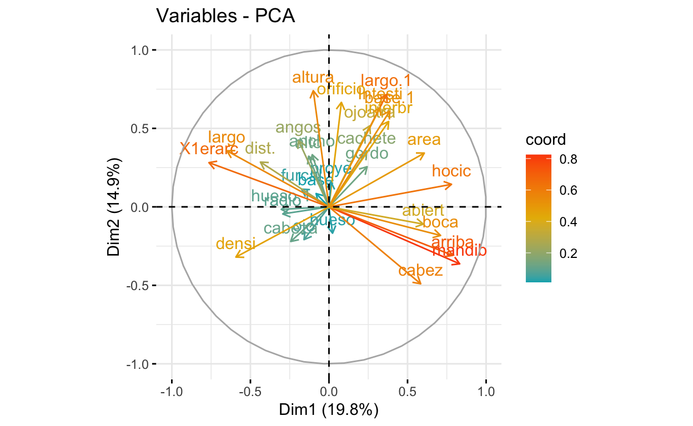
¿Qué variables son las más importantes? Otra forma de ver estos resultados es utilizando la librería corrplot:
Podemos extraer las 4 variables más importantes para un componente dado:
sort(cors[,1], decreasing = T)[1:4]
mandib arriba hocic X1erarc
0.83 0.79 0.78 0.76 sort(cors[,2], decreasing = T)[1:4]
altura largo.1 orificio Intesti
0.74 0.72 0.67 0.63 Un efecto secundario de reducir la dimensionalidad es que podemos formar agrupaciones, (otra de las aplicaciones del ACP) tal y como en el caso del NMDS. Podemos ver cómo se distribuyeron los individuos según nuestras agrupaciones originales, tal que:
fviz_pca_ind(res.pca,
geom.ind = "point", # Mostrar solo puntos (sin textos)
col.ind = x1n[,1], # Número de colores (grupos)
palette = c("#00AFBB", "#E7B800", "#FC4E07"), # Colores a utilizar
addEllipses = TRUE, # Elipses de concentración
legend.title = "Especies")
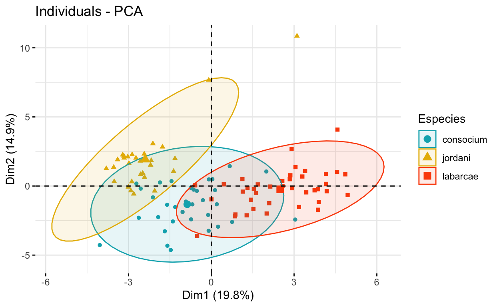
Y podemos también hacer un gráfico conjunto, aunque dada la alta dimensionalidad de esta base de datos, los resultados serán poco interpretables.
fviz_pca_biplot(res.pca,
col.ind = x1n$especie, palette = "jco",
addEllipses = TRUE, label = "var",
col.var = "black", repel = TRUE,
legend.title = "Especies")
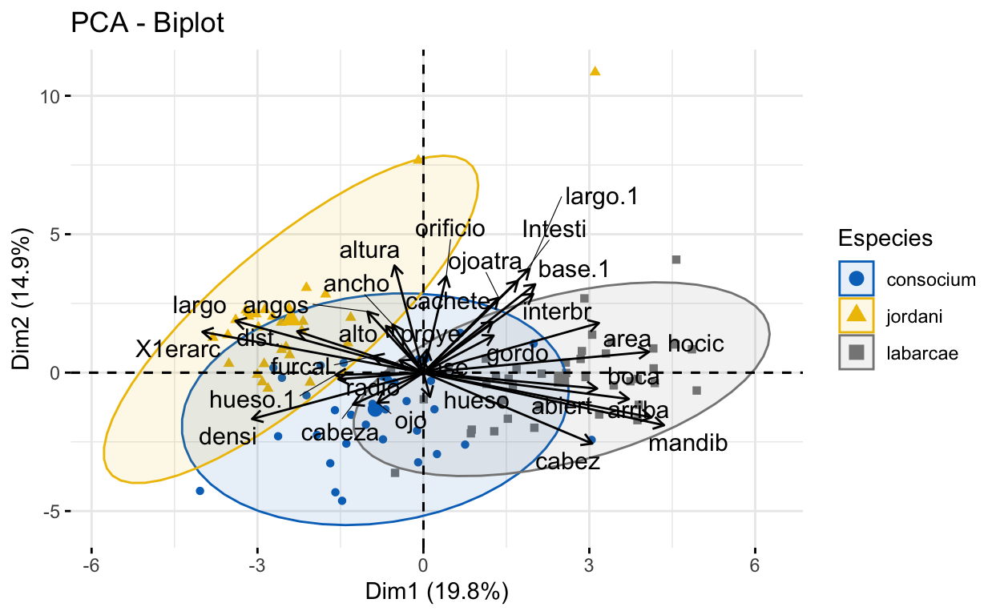
Evaluación de los Componentes Principales
Veamos ahora las varianzas explicadas acumuladas para cada componente:
eig.val <- get_eigenvalue(res.pca)
eig.val
eigenvalue variance.percent cumulative.variance.percent
Dim.1 6.14608922 19.8260942 19.82609
Dim.2 4.63221636 14.9426334 34.76873
Dim.3 2.80882601 9.0607291 43.82946
Dim.4 2.27068129 7.3247783 51.15424
Dim.5 1.68514008 5.4359358 56.59017
Dim.6 1.55020741 5.0006691 61.59084
Dim.7 1.26002881 4.0646091 65.65545
Dim.8 1.10797871 3.5741249 69.22957
Dim.9 1.05894728 3.4159590 72.64553
Dim.10 0.96627425 3.1170137 75.76255
Dim.11 0.84470657 2.7248599 78.48741
Dim.12 0.75624648 2.4395048 80.92691
Dim.13 0.72656100 2.3437452 83.27066
Dim.14 0.62761130 2.0245526 85.29521
Dim.15 0.52955055 1.7082276 87.00344
Dim.16 0.51240639 1.6529238 88.65636
Dim.17 0.45010263 1.4519440 90.10830
Dim.18 0.39821456 1.2845631 91.39287
Dim.19 0.37664998 1.2149999 92.60787
Dim.20 0.35475436 1.1443689 93.75224
Dim.21 0.30760753 0.9922823 94.74452
Dim.22 0.28534181 0.9204574 95.66498
Dim.23 0.26608062 0.8583246 96.52330
Dim.24 0.20787739 0.6705722 97.19387
Dim.25 0.19269314 0.6215908 97.81546
Dim.26 0.16829393 0.5428837 98.35835
Dim.27 0.14322652 0.4620210 98.82037
Dim.28 0.13259938 0.4277399 99.24811
Dim.29 0.10706999 0.3453871 99.59350
Dim.30 0.07572896 0.2442870 99.83778
Dim.31 0.05028750 0.1622177 100.00000De todos los resultados anteriores vemos que las primeras dos dimensiones capturan menos del 50% de la varianza total de los datos; por tanto, es conveniente analizar cuántos componentes principales son los óptimos. Una alternativa es realizar el análisis gráfico de la varianza. En este gráfico buscamos un punto de inflexión, el cual indicaría el límite de los PCs representativos.
fviz_eig(res.pca, addlabels = T)
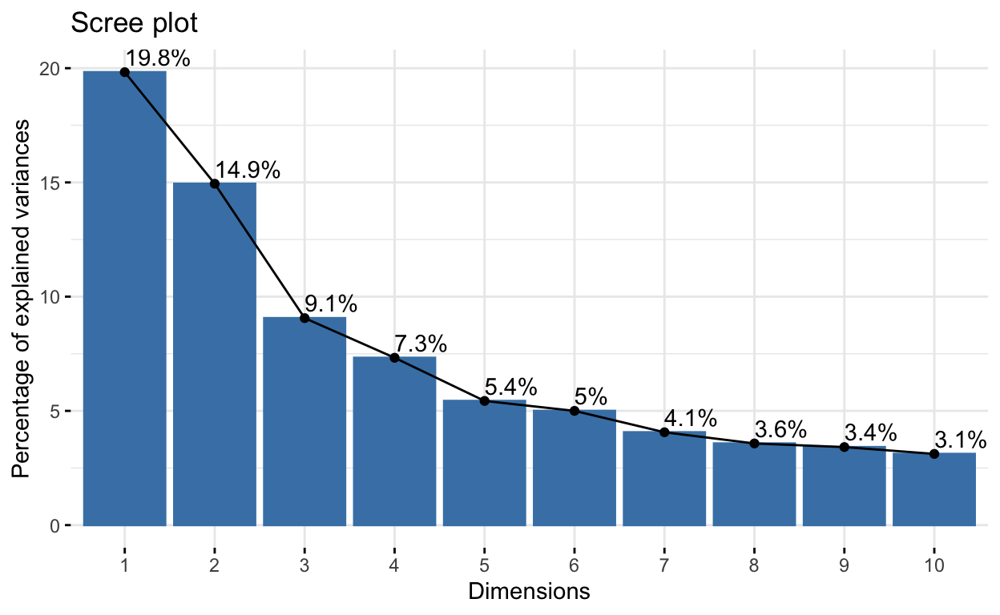
En este gráfico yo consideraría el primer punto de inflexión en el tercer componente principal, pero veamos otros dos criterios. El primero es el criterio de Kaiser-Guttman, en el cual consideraremos los CP cuyas varianzas explicadas sean superiores al valor medio. El segundo modelo es un modelo de repartición de recursos desarrollado en el campo de la ecología: El modelo Broken-Stick (McArthur 1957). En este modelo, el recurso compartido es la varianza total, entonces consideraremos aquellos CPs que contengan una varianza explicada superior a la esperada según el modelo.
#Kaisser-Guttman y Broken Stick
ev <- as.data.frame(eig.val)$eigenvalue
names(ev) <- paste("CP",seq_along(ev), "")
evplot(ev)
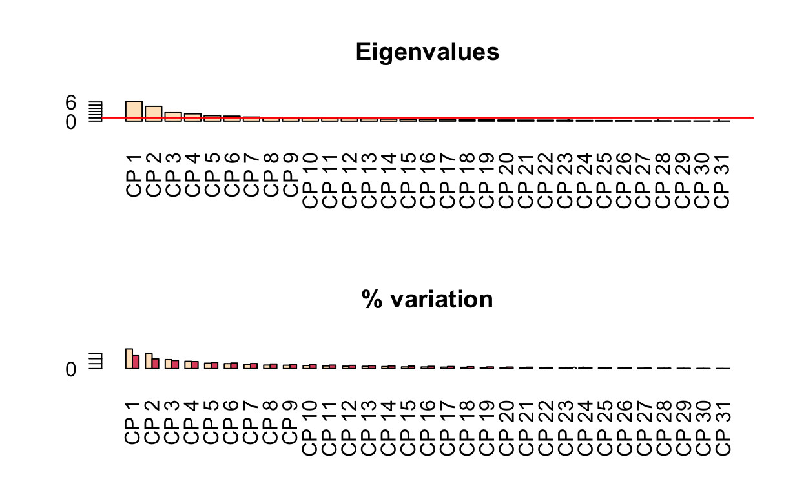
Bajo el criterio de Kaiser-Guttman consideraríamos 8 CPs, mientras que en el modelo de Broken-Stick consideraríamos únicamente 4. De cualquier modo, ambos criterios sugieren un número mayor al que yo consideré en el gráfico de la varianza.
Escalamiento Multidimensional No Métrico (NMDS)
A diferencia del PCA en el cual es importante que las variables estén centradas y estandarizadas (o que las variables sean del mismo tipo; e.g., biometrías en distintas especies de peces), el Escalamiento Multidimensional No Métrico (NMDS) es una técnica más flexible al estar basada en órdenes de rangos (distancias) para la ordenación. Como resultado, puede aceptar una variedad mayor de tipos de datos. Otra diferencia es que en el ACP el objetivo primordial no es la formación de agrupaciones, sino la reducción de la dimensionalidad y la ordenación es una consecuencia del proceso, mientras que en NMDS sí se busca una ordenación.
Para analizar este caso utilicemos los mismos datos del caso sitios (clúster):
# Matriz de distancias
dist.nmds <- dist.mv2
mds <- metaMDS(dist.nmds, distance = "euclidean", k = 2, trace = T)
Run 0 stress 0.1033851
Run 1 stress 0.1188198
Run 2 stress 0.1033851
... Procrustes: rmse 1.970335e-05 max resid 6.222584e-05
... Similar to previous best
Run 3 stress 0.1033851
... Procrustes: rmse 6.603628e-05 max resid 0.0002091009
... Similar to previous best
Run 4 stress 0.1033851
... Procrustes: rmse 6.571116e-05 max resid 0.0002082297
... Similar to previous best
Run 5 stress 0.1033851
... New best solution
... Procrustes: rmse 5.472195e-06 max resid 1.66047e-05
... Similar to previous best
Run 6 stress 0.1033851
... Procrustes: rmse 1.673883e-05 max resid 5.296519e-05
... Similar to previous best
Run 7 stress 0.1033851
... Procrustes: rmse 0.000110847 max resid 0.0003523373
... Similar to previous best
Run 8 stress 0.1188198
Run 9 stress 0.1033851
... Procrustes: rmse 3.145978e-05 max resid 9.880461e-05
... Similar to previous best
Run 10 stress 0.1033851
... Procrustes: rmse 6.479757e-06 max resid 1.310173e-05
... Similar to previous best
Run 11 stress 0.1033851
... Procrustes: rmse 1.165495e-05 max resid 3.694318e-05
... Similar to previous best
Run 12 stress 0.1708132
Run 13 stress 0.1033851
... Procrustes: rmse 1.601501e-05 max resid 5.086657e-05
... Similar to previous best
Run 14 stress 0.1642917
Run 15 stress 0.1188198
Run 16 stress 0.2176284
Run 17 stress 0.1188198
Run 18 stress 0.1033851
... Procrustes: rmse 6.799859e-05 max resid 0.00021525
... Similar to previous best
Run 19 stress 0.1033851
... Procrustes: rmse 3.835759e-05 max resid 0.0001118869
... Similar to previous best
Run 20 stress 0.1033851
... Procrustes: rmse 5.251482e-05 max resid 0.0001695884
... Similar to previous best
*** Solution reachedmds.dims <- data.frame(NMDS1 = mds$points[,1], NMDS2 = mds$points[,2])
mds.plot.data <- cbind(mds.dims, clust.scale)
Podemos obtener también la importancia de las variables, de modo análogo a lo que hicimos con el ACP:
# Extraemos los coef. de determinación de cada variable ~ NMDS (flechas)
fit <- envfit(mds, clust.scale)
arrow <- data.frame(fit$vectors$arrows, R = fit$vectors$r, P = fit$vectors$pvals)
arrow["Variable"] <- rownames(arrow)
# Extraemos aquellas que tengan una corr. significativamente diferente de 0
arrow.p <- subset(arrow, P <= 0.05)
#Ordenamos de manera descendente según su valor de R2
arrow.p <- arrow.p[order(arrow.p$R, decreasing = T), ]
head(arrow.p)
NMDS1 NMDS2 R P Variable
OD -0.8293773 0.5586889 0.9128733 0.001 OD
STD 0.9471231 -0.3208706 0.8744877 0.001 STD
Temp 0.8293920 -0.5586671 0.7176450 0.001 Temp
NH4 0.9517448 -0.3068907 0.6989930 0.002 NH4
Caud 0.9045865 0.4262902 0.6989252 0.001 Caud
Trans -0.7862181 -0.6179491 0.6977633 0.001 Translibrary(ggrepel)
mds.plot <- ggplot(mds.plot.data, aes(NMDS1, NMDS2)) +
geom_point(aes(color = as.factor(res$Best.partition)),
alpha = 0.7) +
geom_label_repel(aes(label = rownames(clust.scale))) +
stat_ellipse(aes(fill = as.factor(res$Best.partition)),
type = "t", size = 1, geom = "polygon",
alpha = 0.2, show.legend = F) +
labs(title = "Escalamiento Multidimensional no métrico (NMDS)",
subtitle = paste('Estrés =',round(mds$stress,3)),
caption = "Datos: cluster.txt") +
blank_theme() +
theme(legend.position = "right") +
scale_color_discrete(name = "Grupo") #+
# geom_segment(data = arrow.p,
# aes(x=0, y=0,
# xend = NMDS1, yend = NMDS2, lty = Variable),
#
# Flechas escaladas según su R^2
# arrow = arrow(length = unit(.25, "cm")*arrow.p$R)
# )
mds.plot
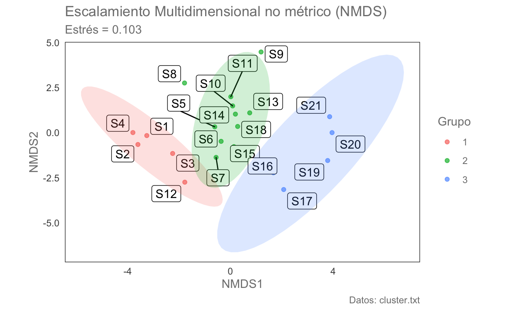
Ahora comparemos con el dendrograma:
ggd2.plot
Ejercicio
Aplicar un ACP a esta misma base de datos. 1. ¿Los datos deben de centrarse y estandarizarse? 2. Realiza el ACP. ¿Cuántos CPs considerarías? 3. ¿Cuál es la varianza explicada entre los dos primeros componentes principales? 4. ¿Cuáles son las variables más imporantes para esos dos componentes? 5. ¿Hay diferencias en la ordenación con respecto a los otros dos métodos? 6. Realizar las tres técnicas con las medidas ambientales, incluyendo SST y comparar con estos resultados.